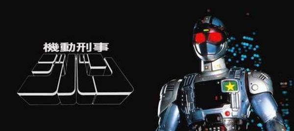

Kidou Keiji Jiban (機動刑事ジバン, Kidō Keiji Jiban; lit. Detetive Móvel Jiban), lançado no Brasil como Policial de Aço Jiban, é uma série de televisão do gênero tokusatsu, da franquia Metal Hero, produzida pela Toei Company entre 1989 e 1990. Tem sua premissa semelhante ao filme norte-americano dos anos 1980 Robocop e ao tokusatsu Robot Detective (ロボット刑事, Robotto Keiji).
Trazida ao Brasil pela extinta distribuidora Top Tape, foi exibida a partir de 1990 pela Rede Manchete. Foi lançado em DVD pela Focus Filmes em 2011 e em julho de 2019 foi disponibilizado no serviço Prime Video pela distribuidora Sato Company.
Em Tókio, no Japão, o policial Naoto Tamura sacrificou sua vida para derrotar um dos monstros da organização Biolon, mas renasceu como o Policial de Aço Jiban, passando a combater o grupo maligno formado pelas mais diversas criaturas mutantes, lideradas pelo Doutor Jean Marrie. Durante a maior parte da série, Naoto/Jiban também tem como sua maior missão reencontrar a menina Mayumi, que ama como se fosse sua irmã (sem saber que, na verdade, ela é sua irmã desaparecida quando ainda era um bebê).